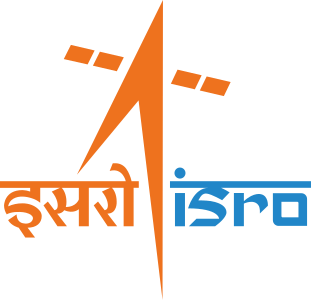

🌌 अंतरिक्ष समाचार | Space News

दिनांक: १८-०७-२०२६ • Date: 18-07-2026 • Time: 11:59 IST • 13 Updates
Reviewer Access


The EPFO has launched VISHWAS 2026, a six-month, one-time dispute resolution scheme to help employers settle pending damages and penalty cases under provident fund laws. The initiative offers substantially reduced penalty rates for eligible defaults before June 14, 2024, through a fully digital, transparent and time-bound process.
Meet The Former ISRO Scientists Behind India's Private Space Revolution NDTV
Skyroot’s Vikram-1 to launch on 18 July. Sriharikota viewing gallery opens registrations ThePrint

Who is destroying ISRO? madhyamamonline.com


NASA researchers recently put a new wing design, appearing long and thin with a lightweight structural design, through a series of grueling tests to find its structural limits. What they found left them encouraged about the wing’s potential, even when they pushed it past its intended limits. The 15-foot Structural Wing Experiment Evaluating Truss-bracing (SWEET-15) […]

Description This composite of images taken by NASA’s Psyche mission shows the crescent of Mars grow as the spacecraft approached the planet for a gravity assist from May 2 to May 15, 2026. The series begins with the smallest crescent at the center of the of the image as Mars is farthest from the spacecraft, and progressively […]

In April 2026, NASA’s Office of the Chief Health and Medical Officer (OCHMO) initiated a working group to review updated VTE case information, additional data gathered revealing altered blood flow status within a cohort of astronauts, and discuss progress of research and clinical activities intended to mitigate the risk of VTE during spaceflight with new […]
CONTRACT RELEASE NASA has selected Chugach Intelligence Solutions LLC to provide comprehensive operations, maintenance, and repair services for NASA’s Ames Research Center in California’s Silicon Valley. The Ames Facilities Support Services II contract ensures that the center’s historic and specialized facilities are properly maintained,...
This composite image, released on July 9, 2026, shows the region around a pulsar – a neutron star with a strong magnetic field that spins incredibly fast – within the Lighthouse nebula. The image contains X-ray data from NASA’s Chandra X-ray Observatory in purple, X-rays from NASA’s IXPE (Imaging X-ray Polarimetry Explorer) in blue, and […]
Read this release in English here. Ya está abierto el plazo de acreditación de los medios de comunicación para el lanzamiento de la misión del telescopio espacial Nancy Grace Roman de la NASA. El lanzamiento del telescopio Roman está programado para no antes de las 7:20 a.m. (hora del este) del domingo 30 de agosto, […]
Media accreditation now is open for the launch of NASA’s Nancy Grace Roman Space Telescope and the agency’s SpaceX Crew-13 missions, both targeting launch in the coming months. The Roman telescope is slated to launch no earlier than 7:20 a.m. EDT Sunday, Aug. 30, aboard a SpaceX Falcon Heavy rocket from Launch Complex 39A at […]